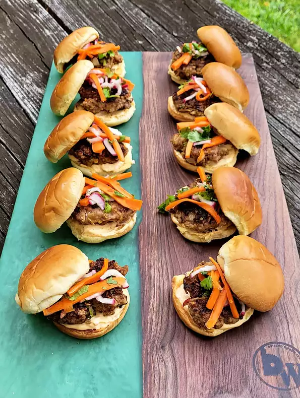

Banh Mi sliders

Description
Vietnamese-inspired pork and beef banh mi sliders. Spread with Sriracha-cilantro aioli
and top with daikon cucumber relish and pickled carrots.
Ingredients
- 1/2 pound ground beef
- 1/2 pound ground pork
- 1/2 cup rolled oats
- 1 slice bread, shredded
- 1 large egg
- 1/4 small onion, diced
- 1 stalk green onion, sliced
- 3 tablespoons dry onion soup mix
- 2 tablespoons chooped fresh basil
- 1 tablespoon soy sauce
- 1 tablespoon minced fresh ginger root
- 1/2 tablespoon sesame oil
- 1 (15 ounce) package slider-size burger bun
Steps
- Gently mix beef, pork, oats, bread, egg, onion, green onion, soup mix,
basil, soy sauce, ginger, and sesame oil together. Form 10 slider-sized patties.
- Heat a frying pan over medium-high heat. Add patties and pan-fry until meat is
browned and no longer pink in the centers, flipping as needed, 5 to 7 minutes.
- While patties fry, toast slider buns in a toaster until lightly browned,
30 seconds to 1 minute each.
- Add patties to toasted buns and serve.